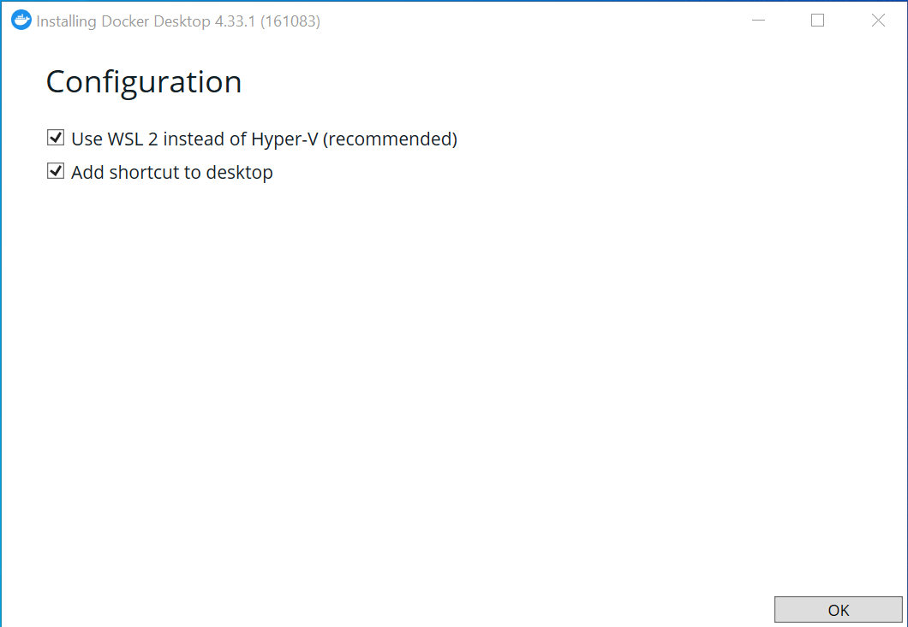
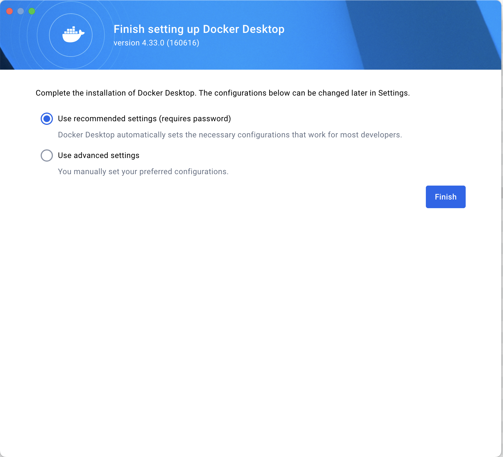
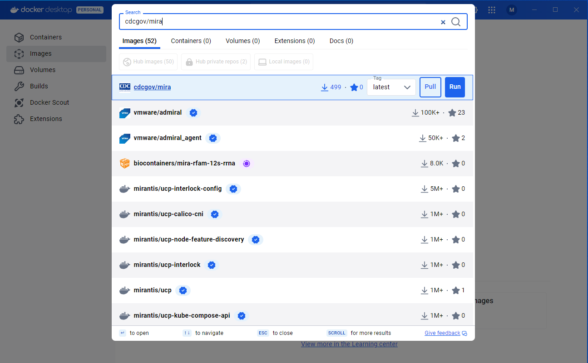
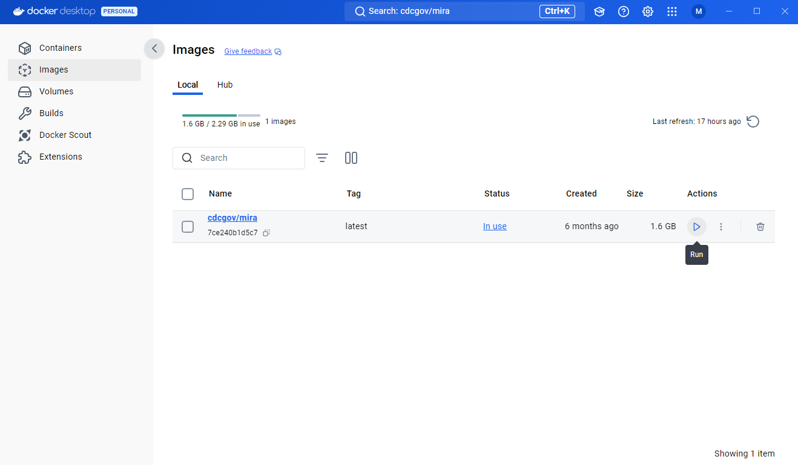
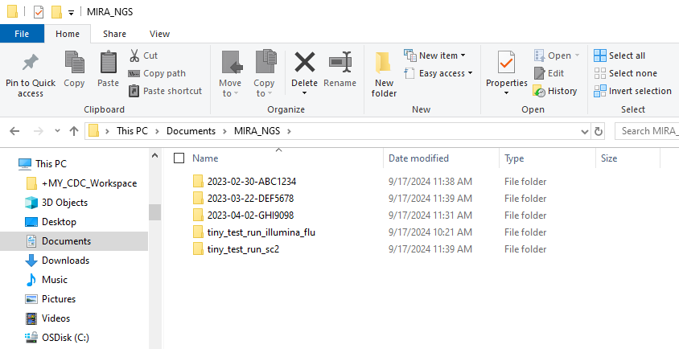
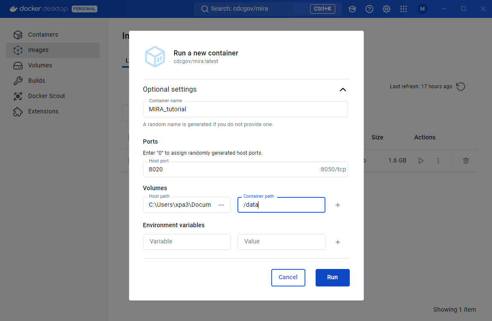

vignettes/mira-dd-getting-started.Rmd
mira-dd-getting-started.RmdDocker allows you to run software inside an isolated “container image” on your computer with all of that application’s needed dependencies. Make sure to install the version for your operating system.
After installing Docker Desktop, double click on the app to open it. If it is your first time using Docker Desktop, you will be asked to agree to the terms of use.
When setting up the configuration for a Windows computer, we recommend using WSL 2 on the back-end and adding shortcuts to you desktop.
When setting up the configuration for a Windows computer, we recommend using the default settings that allow Docker Desktop to automatically set the necessary configuration.

In the search bar at the top of the Docker Desktop App type in cdcgov/mira. Once the image has come up, check that the tag is set to latest + and click the ‘pull’ button.

MIRA’s single image is about 3 GB and will take a couple of minutes to pull to youe images area. Once docker has finished downloading the image, you should see under your images tab.
In the Documents folder on your computer. Create a folder named “MIRA_NGS”. This is where you will put the data that you would like to analyze with MIRA. We will be mounting the container to this folder

In Docker Desktop, navigate to the images tab and press the run button.
The container settings should be filled out as seen in the screenshot below.

tiny_test_run_flutiny_test_run_sc2MIRA_NGS